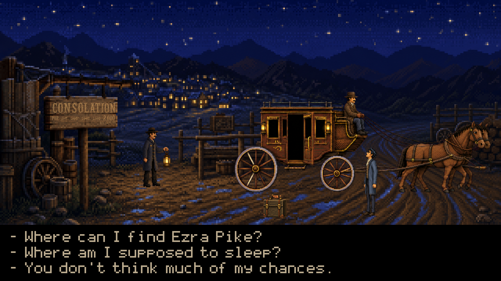
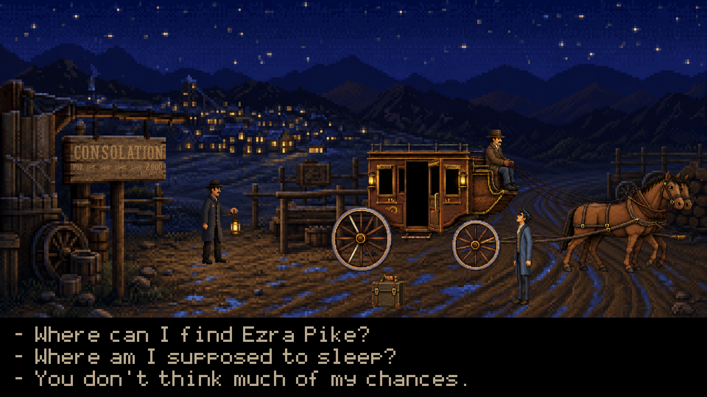
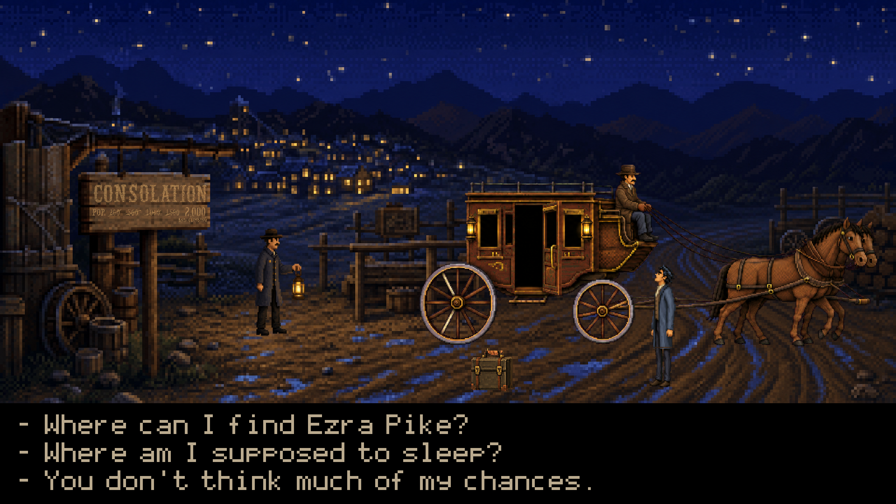

Each frame is what the renderer actually drew with the cursor over that
target's own rect. A rect in the wrong place, a name that does not appear, a hotspot
swallowed by a larger one behind it, and anything simply ugly all show here and in
no validator.
On entryPOSTED NOTICESposted_notices · rect 1150,478,85,105 · verbs LOOK_AT LISTEN_TO

THE WATER TROUGHwater_trough · rect 1862,543,155,62 · verbs LOOK_AT LISTEN_TOA DOGdog · rect 2553,699,150,66 · verbs LOOK_AT LISTEN_TOTHE CHURCH STEEPLEchurch_steeple · rect 748,22,80,205 · verbs LOOK_AT LISTEN_TO

THE IMPROVEMENT COMPANY SIGNcompany_sign · rect 535,268,265,80 · verbs LOOK_AT LISTEN_TOTHE BOARDWALKboardwalk · rect 95,548,1660,70 · verbs LOOK_AT LISTEN_TOTHE HILLShills · rect 3180,140,520,370 · verbs LOOK_AT LISTEN_TOTHE MUDmud · rect 60,626,3600,232 · verbs LOOK_AT LISTEN_TOTHE FALSE FRONTSfalse_fronts · rect 60,175,3040,290 · verbs LOOK_AT LISTEN_TO→ THE NUGGET'S DOORSto_nugget · rect 2268,392,98,134 · verbs LOOK_AT LISTEN_TO→ THE IMPROVEMENT COMPANYto_company · rect 652,402,74,124 · verbs LOOK_AT LISTEN_TO→ THE CLARION OFFICEto_clarion · rect 1068,412,58,110 · verbs LOOK_AT LISTEN_TO→ THE ROAD TO THE CLAIMSto_claims_road · rect 3290,372,320,190 · verbs LOOK_AT LISTEN_TO

→ THE ASSAY OFFICEto_assay_office · rect 3082,428,62,102 · verbs LOOK_AT LISTEN_TO→ THE HOTELto_hotel · rect 2676,422,62,104 · verbs none